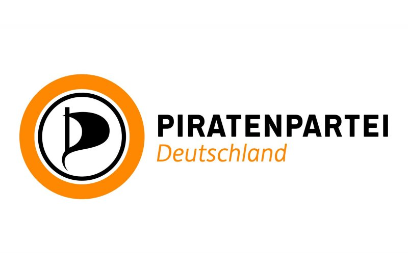

Gegründet 2006 · Netzpolitik · Basisdemokratie
Die Piratenpartei entstand aus der Bewegung gegen Urheberrechtsverfolgung im Internet. Rick Falkvinge gründete sie in Schweden — kurz danach folgte Deutschland. Ihr Fokus: digitale Bürgerrechte, Transparenz und Demokratie im Netz.
Gegen Vorratsdatenspeicherung. Staatliche Überwachung einschränken. Privatsphäre als Grundrecht.
Privates Teilen von Dateien soll erlaubt sein. Kulturelles Erbe frei zugänglich machen.
Alle Datenpakete gleich behandeln. Keine Zwei-Klassen-Gesellschaft im Internet.
Stimme direkt abgeben oder an Experten delegieren. Mehr direkte Demokratie.
→ Liquid Democracy: Du kannst bei Abstimmungen direkt abstimmen oder deine Stimme an jemanden delegieren, dem du vertraust — und jederzeit zurückziehen.
BEISPIEL: Abstimmung über Netzpolitik-Gesetz
Delegation ist jederzeit widerrufbar. Wer sich auskennt, bekommt mehr Gewicht — wer will, stimmt direkt. Mischung aus direkter und repräsentativer Demokratie.
Ursprungsland. 2009 EU-Parlament-Einzug mit 7,1 %. Rick Falkvinge als Gründer.
Stärkste nationale Sektion. 2012 Hochpunkt mit 4 Landtagen und 35.000 Mitgliedern.
Heute noch aktiv und relevant. 2016: 14,5 % bei Parlamentswahl — drittgrößte Partei.
Stärkste europäische Sektion heute. 2021: Teil der Regierungskoalition mit 15,6 %.
Pirate Parties International (PPI) koordiniert weltweit. Von Brasilien bis Australien.
Mehrere Mandate über die Jahre. Fokus auf Digitalpolitik und Bürgerrechte in Brüssel.
Thomas Ganskow
Bundesvorsitzender seit 2022. Langjähriges Mitglied, IT-Hintergrund.
Kleiner Bundesvorstand, bewusst flach gehalten. Keine „Partei-Elite" — Prinzip der Piraten.
Vorstand wird auf Bundesparteitagen gewählt. Jedes Mitglied kann kandidieren und abstimmen.
Partei hat kaum noch Mandate. Vorstand verwaltet hauptsächlich die verbleibende Struktur.
Hinweis: Die Piraten hatten nie starke Einzelpersönlichkeiten — Programm und Basis standen immer über Personenkult.
💡 Viele Forderungen wurden inzwischen von anderen Parteien übernommen — z. B. Cannabis-Legalisierung (SPD/Grüne) und Datenschutz-Grundverordnung (DSGVO).
Kein Bundestagsmandat seit 2013. Kandidieren weiterhin, aber unter 1 %. Kaum Einfluss auf Bundesebene.
Keine Landtagsmandate mehr in Deutschland. Letzter Einzug: Saarland 2012. Seither aus allen Landtagen geflogen.
Aktiv im EU-Parlament über Partnerparteien. Tschechische Piraten stellten 2021 Ministerposten in der Regierung.
Themen wie KI-Regulierung, Chatkontrolle und Datenschutz treiben Piraten weiter an — auch ohne Mandate.
📍 Bayern: Piraten traten zuletzt 2023 zur Landtagswahl an — Ergebnis unter 0,5 %. Kein Einzug in den Bayerischen Landtag.
„Die Piraten haben als erste Partei in Deutschland erkannt, dass das Internet keine technische Frage ist — sondern eine politische."
— Häufige Einschätzung in der PolitikwissenschaftAlle obigen Themen: ursprünglich von den Piraten auf die Agenda gesetzt 🏴☠️